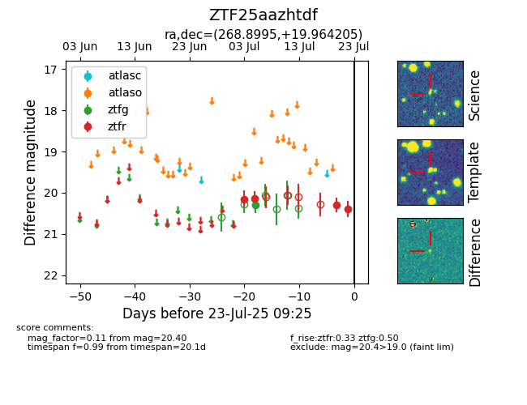

Target ZTF25aazhtdf at 2025-07-23 11:48, see:
FINK: fink-portal.org/ZTF25aazhtdf
Lasair: lasair-ztf.lsst.ac.uk/objects/ZTF25aazhtdf
ALeRCE: alerce.online/object/ZTF25aazhtdf
alt names
ZTF25aazhtdf (ztf,fink)
coordinates:
equatorial (ra, dec) = (268.8995,+19.96421)
galactic (l, b) = (45.3278,+20.94611)
photometry
last ztfg=20.29, ztfr=20.40
1 ztfg, 4 ztfr detections
